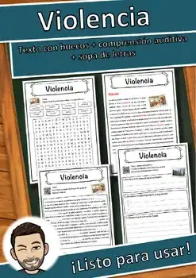
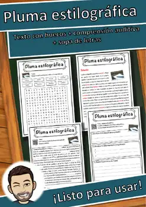
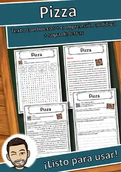
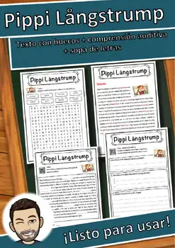
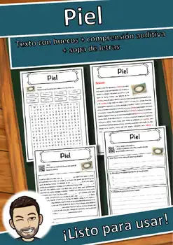
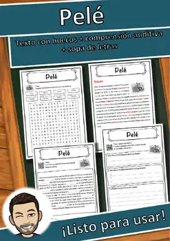
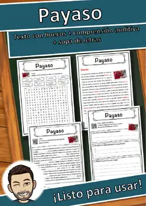
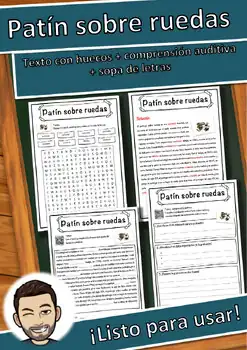
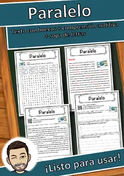

Violencia – Ficha de lectura: texto con huecos, comprensión auditiva y sopa de letras
US$ 3.99Ver en TpT
Ficha de lectura en español sobre «Violencia»: texto informativo con huecos y banco de palabras, comprensión auditiva con código QR (audio MP3 gratuito, sin registro) y sopa de letras (5 páginas, con solucionario).
Del texto: «La violencia ocurre cuando una persona o un grupo lastima a otros a propósito, ya sea con golpes, palabras feas o incluso sin hacer nada cuando deberían ayudar.»
Contenido:
- Página 1: texto informativo sobre Violencia como texto con huecos y banco de palabras (8 huecos)
- Página 2: solucionario del texto con huecos
- Página 3: comprensión auditiva: escanear el código QR, escuchar la grabación en español, escribir un título, anotar tres datos y resumir lo escuchado en dos oraciones
- Página 4: sopa de letras con las 8 palabras clave
- Página 5: solucionario de la sopa de letras
Lenguaje claro y sencillo (aprox. nivel MCER A2–B1). Sin preparación: imprimir y usar. En blanco y negro, fácil de fotocopiar.
MateriaCultura general
GradosGrados 7–10
Tipo de recursoFicha de lectura
Páginas5
FormatoPDF
SolucionarioIncluido
Recursos similares

Pluma estilográfica – Ficha de lectura: texto con huecos, comprensión auditiva y sopa de letras

Pizza – Ficha de lectura: texto con huecos, comprensión auditiva y sopa de letras

Pippi Långstrump – Ficha de lectura: texto con huecos, comprensión auditiva y sopa de letras

Piel – Ficha de lectura: texto con huecos, comprensión auditiva y sopa de letras

Pelé – Ficha de lectura: texto con huecos, comprensión auditiva y sopa de letras

Payaso – Ficha de lectura: texto con huecos, comprensión auditiva y sopa de letras

Patín sobre ruedas – Ficha de lectura: texto con huecos, comprensión auditiva y sopa de letras
